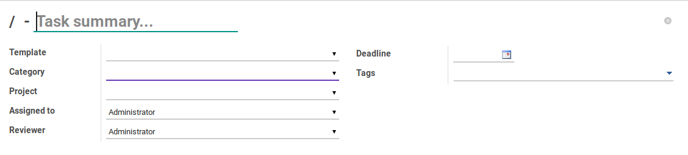
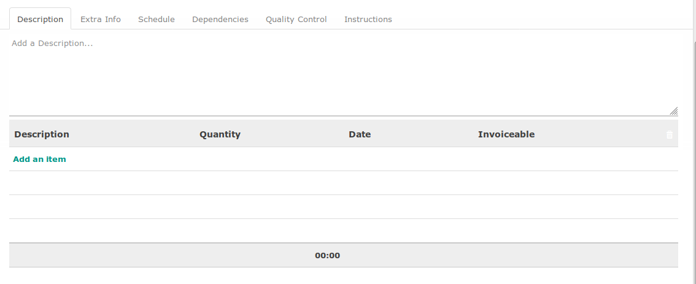

Penjelasan
A. BAGIAN HEADER

Task Summary
Penjelasan singkat task
Template
Template task yang digunakan
Category
Kategori task
Project
Project yang memiliki task tersebut
Assigned To
User yang ditugaskan untuk menyelesaikan task
Reviewer
User yang ditugaskan untuk mereview penyelesaian task
Deadline
Abaikan
Tags
Penggolongan task
B. TAB DESCRIPTION

Description
Penjelasan task
B.1. Tabel Timesheet
Tabel timesheet akan berisi detail pengerjaan dan waktu pengerjaan task

Description
Deskripsi pengerjaan
Quantity
Jumlah jam yang digunakan (format HH:MM)
Date
Tanggal timesheet dilakukan
Invoiceable
Opsi untuk (1) menentukan apakah waktu pengerjaan dapat diinvoice ke konsumen/klien, (2) menentukan berapa proporsi waktu yang dapat diinvoice ke konsumen/klien.
C. TAB EXTRA INFO

Priority
Prioritas task
Customer
(Abaikan)
Order Line
(Abaikan)
Sequence
Urutan task
State
Status dari task. Berikut adalah beberapa status yang dapat terjadi:
- Draft. Task belum mulai dikerjakan.
- On Progress. Task sedang dikerjakan.
- Done. Task sudah selesai.
- Pending. Task sudah mulai dikerjakan namun pengerjaannya sedang dipending.
- Cancel. Task sudah dibatalkan.
Company
Pemilik task
Last Stage Update
Waktu terakhir task berubah stage
D. TAB SCHEDULE

Timezone
Zona waktu yang digunakan dalam menghitung jadwal
Start Schedule Based On
Patokan tanggal mulai task. Beberapa opsi dapat yang dapat dipilih:
- Manual. User harus secara manual menentukan tanggal mulai task
- Task Baseline Start. Tanggal mulai akan dihitung dengan berpatokan pada Baseline Start yang dimiliki oleh task yang dipilih pada isian Task Based Schedule
- Task Baseline Finish. Tanggal mulai akan dihitung dengan berpatokan pada Baseline Finish yang dimiliki oleh task yang dipilih pada isian Task Based Schedule
- Project Baseline Start. Tanggal mulai akan dihitung dengan berpatokan pada Baseline Start yang dimiliki oleh project yang dipilih pada isian Project Based Schedule
- Project Baseline Finish. Tanggal mulai akan dihitung dengan berpatokan pada Baseline Finish yang dimiliki oleh project yang dipilih pada isian Project Based Schedule
Project Based Schedule
Project yang akan digunakan sebagai patokan untuk menentukan tanggal mulai task. Hanya muncul apabila isian Start Schedule Based On tidak sama dengan Manual
Task Based Schedule
Task yang akan digunakan sebagai patokan untuk menentukan tanggal mulai project. Hanya muncul apabila isian Start Schedule Based On tidak sama dengan Manual
Baseline Start Offset
Perhitungan penambahan/pengurangan tanggal mulai
Baseline Start Offset UoM
Satuan perhitungan penambahan/pengurangan tanggal mulai
Finish Schedule Based On
Patokan tanggal selesai task. Beberapa opsi dapat yang dapat dipilih:
- Manual. User harus secara manual menentukan tanggal selesai project
- Task Baseline Start. Tanggal selesai akan dihitung dengan berpatokan pada Baseline Start yang dimiliki oleh task yang dipilih pada isian Task Based Schedule
- Task Baseline Finish. Tanggal selesai akan dihitung dengan berpatokan pada Baseline Finish yang dimiliki oleh task yang dipilih pada isian Task Based Schedule
- Project Baseline Start. Tanggal selesai akan dihitung dengan berpatokan pada Baseline Start yang dimiliki oleh project yang dipilih pada isian Project Based Schedule
- Project Baseline Finish. Tanggal selesai akan dihitung dengan berpatokan pada Baseline Finish yang dimiliki oleh project yang dipilih pada isian Project Based Schedule
Project Based Schedule
Project yang akan digunakan sebagai patokan untuk menentukan tanggal selesai task. Hanya muncul apabila isian Finish Schedule Based On tidak sama dengan Manual
Task Based Schedule
Task yang akan digunakan sebagai patokan untuk menentukan tanggal selesai project. Hanya muncul apabila isian Finish Schedule Based On tidak sama dengan Manual
Baseline Finish Offset
Perhitungan penambahan/pengurangan tanggal selesai
Baseline Finish Offset UoM
Satuan perhitungan penambahan/pengurangan tanggal selesai
E. TAB DEPENDENCIES

E.1 TABEL PREDECESSOR
Tabel predecessor akan berisi tugas-tugas (task) yang pelaksanaannya mendahului task terkait.

Predecessor Task
Task pendahulu
Dependency Type
Jenis hubungan dengan predecessor. Terdapat beberapa jenis hubungan yang dapat dipilih:
- Start-To-Finish. Predecessor harus dimulai terlebih dahulu sebelum task dapat diselesaikan.
- Start-To-Start. Predecessor harus dimulai terlebih dahulu sebelum task dapat dimulai.
- Finish-To-Start. Predecessor harus diselesaikan terlebih dahulu sebelum task dapat dimulai.
- Finish-To-Finish. Predecessor harus diselesaikan terlebih dahulu sebelum task dapat diselesaikan.
Task Stage
Stage dari task pendahulu
Task State
State dari task pendahulu
E.1 TABEL SUCESSOR
Tabel predecessor akan berisi tugas-tugas (task) yang pelaksanaannya didahului oleh task terkait.
Successor Task
Task lanjutan
Dependency Type
Jenis hubungan dengan sucessor. Terdapat beberapa jenis hubungan yang dapat dipilih:
- Start-To-Finish. Task harus dimulai terlebih dahulu sebelum predecessor dapat diselesaikan.
- Start-To-Start. Task harus dimulai terlebih dahulu sebelum predecessor dapat dimulai.
- Finish-To-Start. Task harus diselesaikan terlebih dahulu sebelum predecessor dapat dimulai.
- Finish-To-Finish. Task harus diselesaikan terlebih dahulu sebelum predecessor dapat diselesaikan.
Task Stage
Stage dari task lanjutan
Task State
State dari task lanjutan
F. TAB QUALITY CONTROL

QC Passed?
QC Passed akan bernilai True apabila semua pertanyaan pada tabel quality control lolos uji (ditandai dengan nilai True pada field Success). Bernilai False apabila salah satu pertanyaan pada tabel quality control tidak lolos uji (ditandai dengan nilai False pada field Success)
F.1 TABEL QUALITY CONTROL
Tabel quality control akan berisi item-item pengujian yang dibutuhkan agar task dapat diselesaikan.
Question
Pertanyaan yang akan diuji
Type
Tipe item pengujian, yaitu:
- Quantitative: User harus menyediakan jawaban atas pertanyaan yang akan diuji dalam bentuk angka.
- Qualitative: User harus memilih jawaban atas pertanyaan yang akan diuji.
Qualitative Value
Jawaban dari pertanyaan (jika isian Type sama dengan Qualitative)
Quantitative Value
Jawaban dari pertanyaan (jika isian Type sama dengan Quantitative)
Valid Value
Jawaban yang dibutuhkan agar item pengujian lolos uji
Success?
Bernilai True apabila jawaban (Qualitative Value atau Quantitative Value, tergantung Type) sesuai dengan Valid Value
G. TAB INSTRUCTION